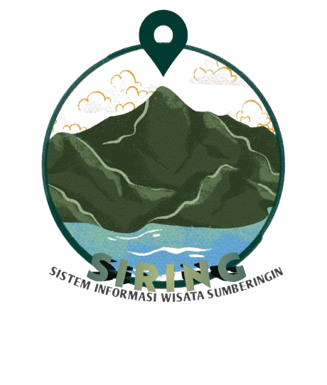
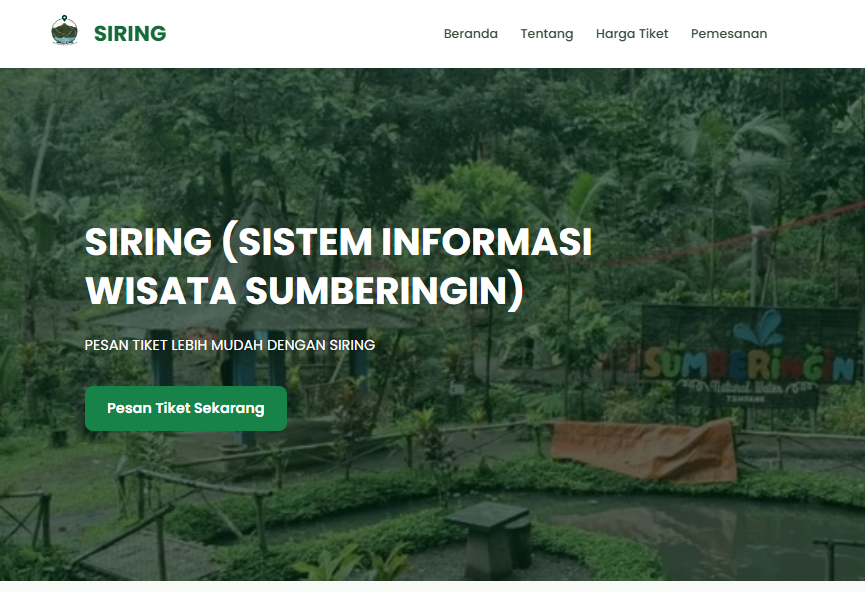
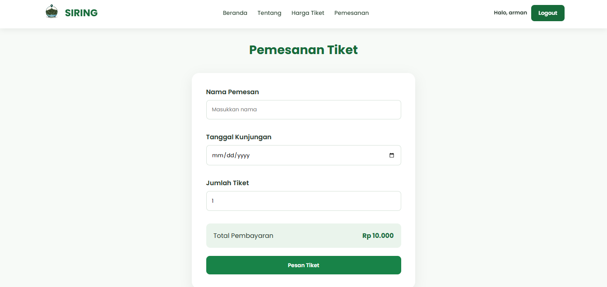
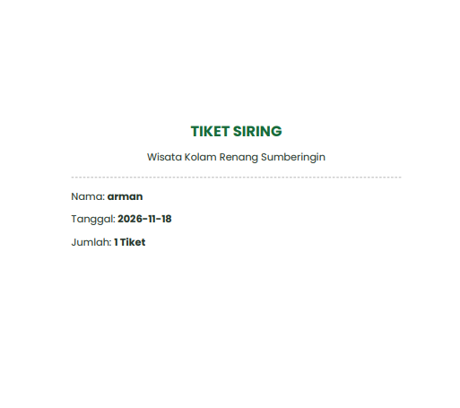
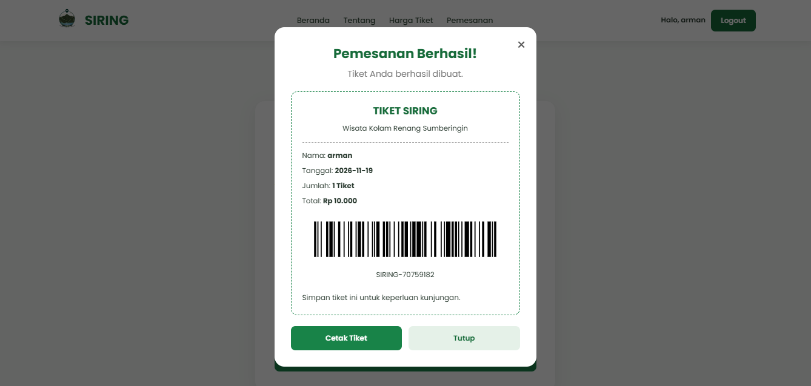
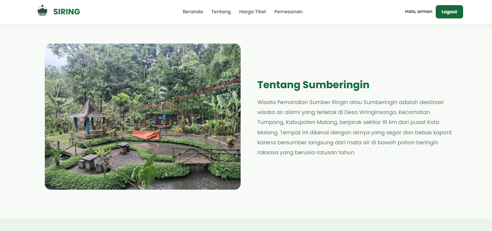

PESAN TIKET LEBIH MUDAH DENGAN SIRING

SIRING merupakan sebuah sistem informasi yang dirancang untuk mempermudah pengunjung dalam mendapatkan informasi mengenai Wisata Kolam Renang Sumberingin.
Melalui SIRING, pengunjung dapat mengenal informasi wisata serta mengetahui berbagai fitur yang disediakan dalam satu platform.
Berbagai kemudahan yang diperkenalkan melalui SIRING
Memberikan kemudahan dalam melakukan pemesanan tiket wisata secara online.
Menyediakan informasi mengenai proses pembayaran tiket wisata.
Memperkenalkan tiket digital dengan barcode untuk proses pemeriksaan tiket.
Membantu pengunjung mengetahui informasi mengenai Wisata Sumberingin.
Contoh tampilan testimoni untuk website SIRING
"Tampilan website SIRING sederhana sehingga informasi wisata mudah ditemukan."
"Fitur pemesanan tiket online dapat membantu pengunjung melakukan pemesanan dengan lebih praktis."
"Informasi dan fitur yang tersedia tersusun dengan rapi dan mudah dipahami."
Berikut merupakan tampilan beberapa fitur yang tersedia pada website SIRING

Memudahkan pengunjung untuk memesan tiket wisata secara online tanpa harus datang langsung ke lokasi.

Memberikan informasi mengenai proses pembayaran tiket agar pengunjung dapat melakukan transaksi dengan mudah.

Menyediakan tiket digital sebagai bukti pemesanan yang dapat digunakan saat memasuki area wisata.

Membantu pengunjung mengetahui informasi mengenai wisata, fasilitas, dan hal-hal yang tersedia di Kolam Renang Sumberingin.
Hubungi kami melalui WhatsApp untuk mendapatkan informasi mengenai sistem SIRING dan Wisata Kolam Renang Sumberingin.
Hubungi Kami